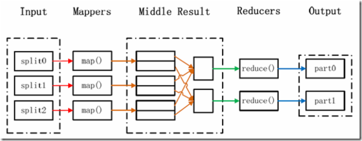

本篇将解读MapReduce的原理及其简单应用
通常我们在学习一门语言的时候，写的第一个程序就是Hello World。而在学习Hadoop时，我们要写的第一个程序就是词频统计WordCount程序。
MapReduce采用”分而治之”的思想，把对大规模数据集的操作，分发给一个主节点管理下的各个分节点共同完成，然后通过整合各个节点的中间结果，得到最终结果。简单地说，MapReduce就是”任务的分解与结果的汇总”。 在Hadoop中，用于执行MapReduce任务的机器角色有两个： JobTracker用于调度工作的，一个Hadoop集群中只有一个JobTracker，位于master。 TaskTracker用于执行工作，位于各slave上。 在分布式计算中，MapReduce框架负责处理了并行编程中分布式存储、工作调度、负载均衡、容错均衡、容错处理以及网络通信等复杂问题，把处理过程高度抽象为两个函数：map和reduce，map负责把任务分解成多个任务，reduce负责把分解后多任务处理的结果汇总起来。 需要注意的是，用MapReduce来处理的数据集（或任务）必须具备这样的特点：待处理的数据集可以分解成许多小的数据集，而且每一个小数据集都可以完全并行地进行处理。
在Hadoop中，每个MapReduce任务都被初始化为一个Job，每个Job又可以分为两种阶段：map阶段和reduce阶段。如下图所示：
WordCount可以说是最简单的MapReduce程序了，只包含三个文件：一个 Map 的 Java 文件，一个 Reduce 的 Java 文件，一个负责调用的主程序 Java 文件。 我们在当前用户的主文件夹下创建wordcount_01/目录，在该目录下再创建src/和classes/。 src 目录存放 Java 的源代码，classes 目录存放编译结果。
TokenizerMapper.java
package com.lisong.hadoop;
import java.io.IOException;
import java.util.StringTokenizer;
import org.apache.hadoop.io.IntWritable;
import org.apache.hadoop.io.Text;
import org.apache.hadoop.mapreduce.Mapper;
public class TokenizerMapper extends Mapper< Object, Text, Text, IntWritable> {
IntWritable one = new IntWritable(1);
Text word = new Text();
public void map(Object key, Text value, Context context) throws IOException,InterruptedException {
StringTokenizer itr = new StringTokenizer(value.toString());
while(itr.hasMoreTokens()) {
word.set(itr.nextToken());
context.write(word, one);
}
}
}
IntSumReducer.java
package com.lisong.hadoop;
import java.io.IOException;
import org.apache.hadoop.io.IntWritable;
import org.apache.hadoop.io.Text;
import org.apache.hadoop.mapreduce.Reducer;
public class IntSumReducer extends Reducer< Text, IntWritable, Text, IntWritable> {
IntWritable result = new IntWritable();
public void reduce(Text key, Iterable< IntWritable> values, Context context) throws IOException,InterruptedException {
int sum = 0;
for(IntWritable val:values) {
sum += val.get();
}
result.set(sum);
context.write(key,result);
}
}
Hadoop 2.x 版本中jar不再集中在一个 hadoop-core-*.jar 中，而是分成多个 jar。编译WordCount程序需要如下三个 jar：
$HADOOP_HOME/share/hadoop/common/hadoop-common-2.4.1.jar
$HADOOP_HOME/share/hadoop/mapreduce/hadoop-mapreduce-client-core-2.4.1.jar
$HADOOP_HOME/share/hadoop/common/lib/commons-cli-1.2.jar
使用javac命令进行编译：
cd wordcount_01
$ javac -classpath /home/hadoop/hadoop/share/hadoop/common/hadoop-common-2.6.0.jar:/home/hadoop/hadoop/share/hadoop/mapreduce/hadoop-mapreduce-client-core-2.6.0.jar:/home/hadoop/hadoop/share/hadoop/common/lib/commons-cli-1.2.jar -d classes/ src/*.java
//-classpath，设置源代码里使用的各种类库所在的路径，多个路径用":"隔开。
//-d，设置编译后的 class 文件保存的路径。
//src/*.java，待编译的源文件。
将编译好的 class 文件打包成 Jar 包，jar 命令是 JDK 的打包命令行工具。打包结果是 wordcount.jar 文件，放在当前目录下。
jar -cvf wordcount.jar classes
1 . 先查看hdfs文件系统的根目录：
$ hadoop/bin/hadoop fs -ls /
Found 1 items
drwxr-xr-x - hadoop supergroup 0 2015-07-28 14:38 /hbase
2 . 然后利用put将输入文件（多个输入文件位于input文件夹下）复制到hdfs文件系统中：
hadoop/bin/hadoop fs -put input /hbase
3 . 运行wordcount程序
hadoop/bin/hadoop jar wordcount_01/wordcount.jar WordCount /hbase/input /hbase/output
4 . 查看运行结果
$ hadoop/bin/hadoop fs -ls /hbase/output
Found 2 items
-rw-r--r-- 3 hadoop supergroup 0 2015-07-28 18:05 /hbase/output/_SUCCESS
-rw-r--r-- 3 hadoop supergroup 33 2015-07-28 18:05 /hbase/output/part-r-00000